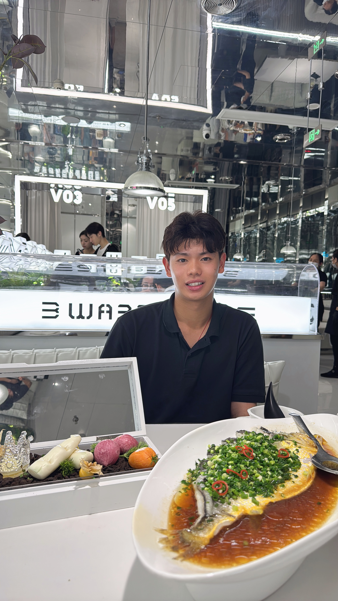
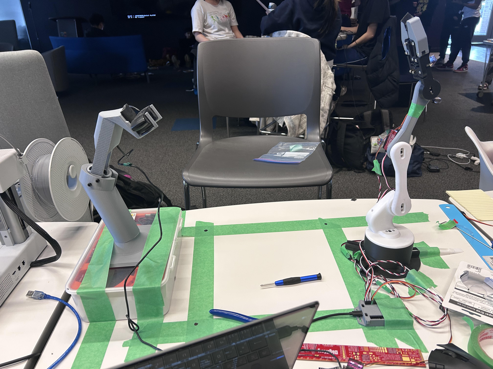

Max Yuan
Mechatronics Engineering student, building quadruped locomotion, ROS2 autonomy, and learned + vision-guided manipulation.
Selected work
1st place · Battle of the Schools, UMIST
The Brackey Way, a robot that makes a sandwich by itself
A dual-arm Bracket Bot that takes toast out of a toaster, puts it on a plate, adds lettuce, and places the top slice. A fine-tuned π0 VLA handles the difficult grasps, OpenCV + inverse kinematics handles the simple ones, and a state machine switches between them.
π0 VLAImitation learningOpenCVState machine
Quadruped locomotion from scratch with PPO (IN PROGRESS)
A walking policy for a Unitree Go2 quadruped, trained with PPO in Isaac Lab.
Isaac LabPPOPyTorch
Autonomous Maze Navigator in Isaac Sim (Nova Carter)
A ROS2 navigation stack: SLAM builds a map of the maze, AMCL localizes the robot on the map, and Nav2 plans a path and drives it.
ROS2Nav2SLAM

RICO, a robotic arm that fetches tools when you ask
You ask for a tool, and the arm finds it on the bench and hands it to you. Uses a Groq LLM, homography, YOLOv8 object detection, and inverse kinematics.
YOLOv8OpenCVInverse kinematics

FIRST Tech Challenge 18844
Co-captain and lead programmer. PID point-to-point movement, odometry with IMU heading, and CNN-driven automated pickup.
PID controlOdometryJava
Toolkit
Languages
- Python
- Java
- C++
Simulation and robotics
- Isaac Sim
- Isaac Lab
- ROS2
- RViz
- Onshape
Learning and vision
- PyTorch
- rsl_rl
- OpenCV
- YOLOv8
- π0 VLA
Focus areas
- Reinforcement learning
- Imitation learning
- PID control
- Inverse kinematics
- Odometry and SLAM